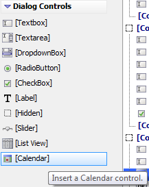
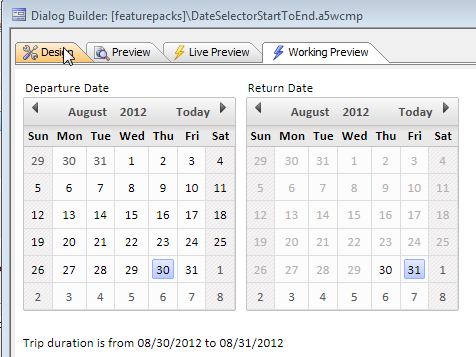
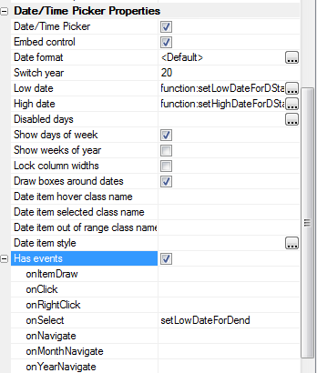
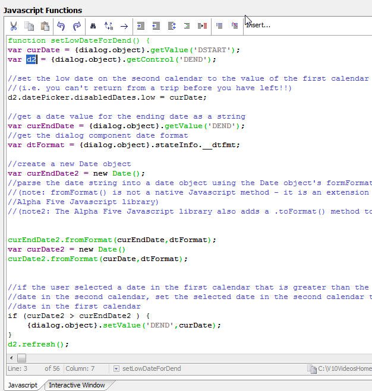
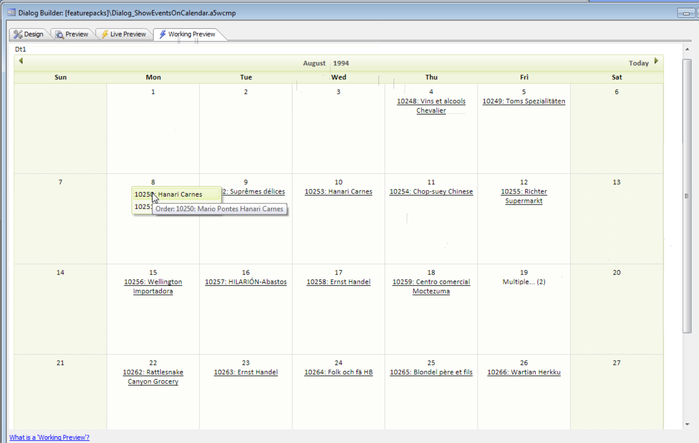
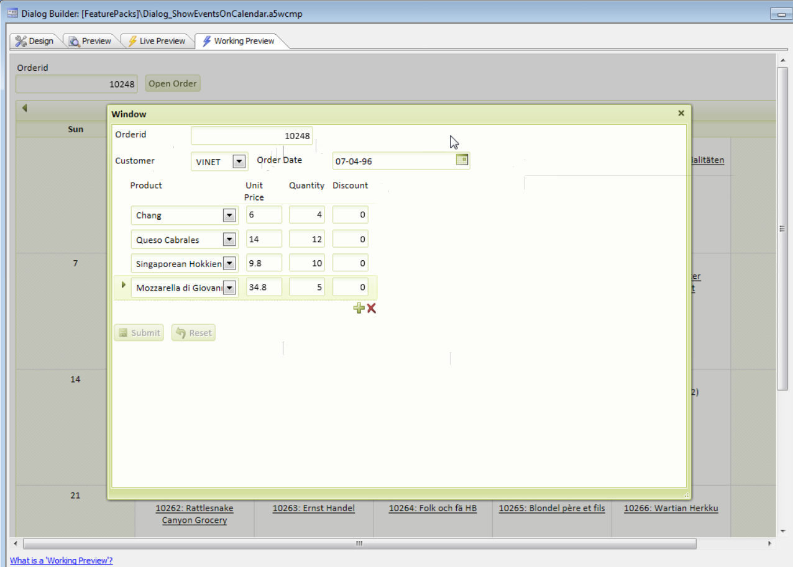
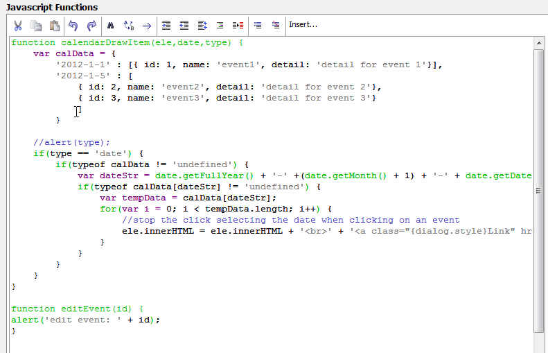
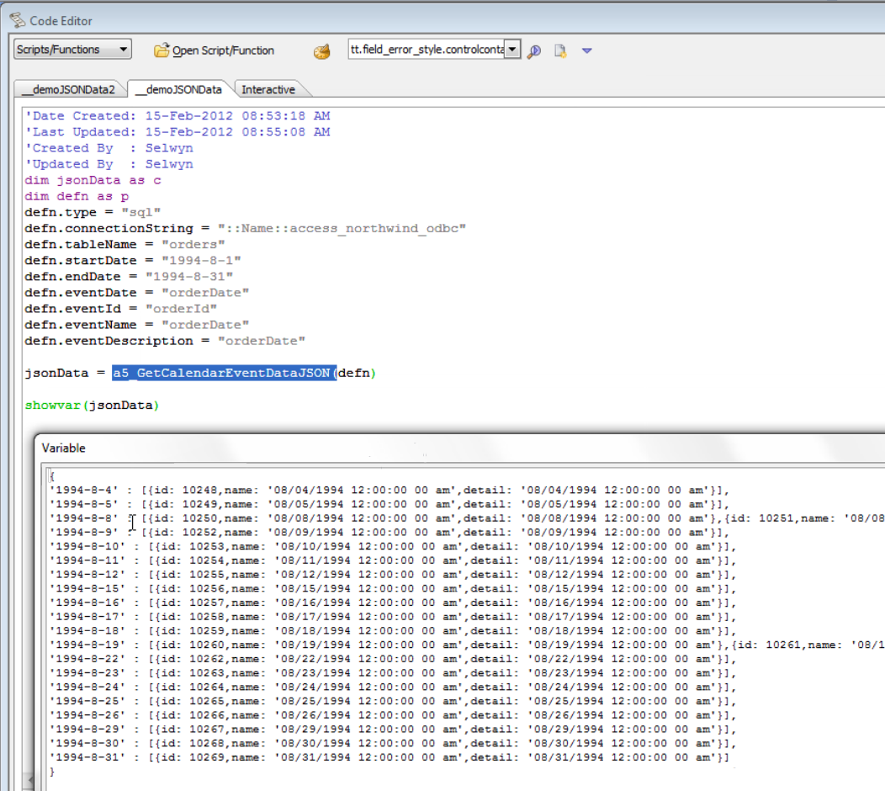
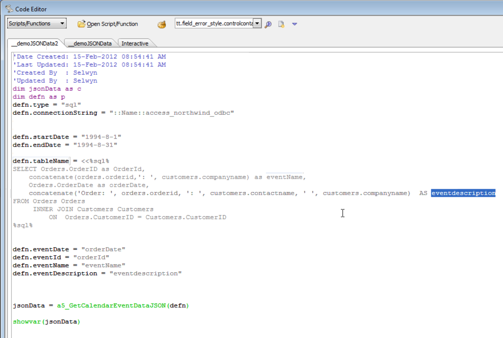
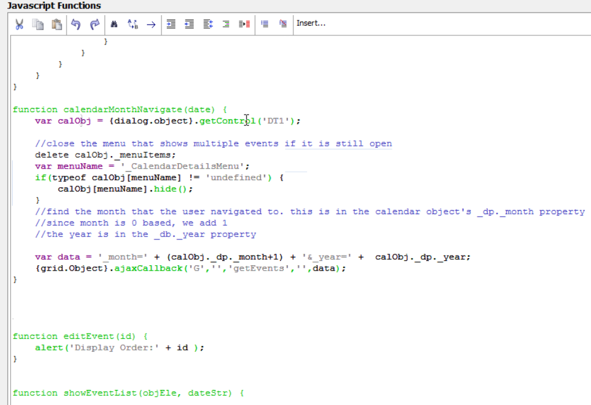

Calendar Control in a Dialog Component
Requires the Dialog Component - Calendar control feature pack, included in subscriptionThis page describes the embedded Calendar control for the Dialog; it is not as fully-featured as the Calendar Component. In the Calendar control, you can get and set values, handle events, and submit values, just like any other Dialog control. In the Calendar Component, you can build a complete scheduling system with its own database tables and built-in drag and drop of appointments.
You could use Calendar controls to create a hotel room search site for consumers. You could use a Calendar component to create a full-blown scheduling system for room bookings in a hotel.
Add the calendar control to a dialog
In the Dialog Builder, open the Controls view and the Dialog Controls accordion control, and pick [Calendar]
As you'll see in the following video, in most respects the Calendar control behaves like any other dialog control.
Watch Video
Updating the end date from the start date
You can control the current value and the low and high limits of one calendar control from another.
This video shows you how to set that up.
Watch Video - Part 1
As shown in the above video, you need to define some events to make this happen.

You also need to write some fairly straightforward JavaScript for the events.

The second part of the video completes the explanation of the sample.
Watch Video - Part 2
If you'd like, you can Download the Components Used in the above Videos
Displaying Events
How to set up a calendar to show events on each day of the month.
Watch Video
You can download the Components used in this video
Open another Dialog showing details of the Order that was clicked on in the Calendar.
How to open another Dialog showing the details of the order that was clicked on in the Calendar.
Watch Video
Displaying Custom Information
You can download the Components used in these VideosUnderstanding the OnItemDraw event
Introduction: Watch Video - Part 1
Stopping the click event from bubbling up: Watch Video - Part 2
Handling a lot of events for a given day: Watch Video - Part 3
Displaying a pick menu for multiple events: Watch Video - Part 4
Understanding the Xbasic to get the orders for a given month in the required JSON format
Using the a5_GetCalendarEventDataJSON function, simple table
Using the a5_GetCalendarEventDataJSON function, SQL query

Watch Video
Making Ajax callbacks to populate the Calendar
Month navigate event handler: Watch Video - Part 1
Debug through the callbacks and connect the dots: Watch Video - Part 2
See also
The full Calendar Component, which allows you build a scheduling application.The Dialog Component, which hosts the embedded Calendar Control. The Calendar control shares its date/time picker properties with the Textbox for date and time types.